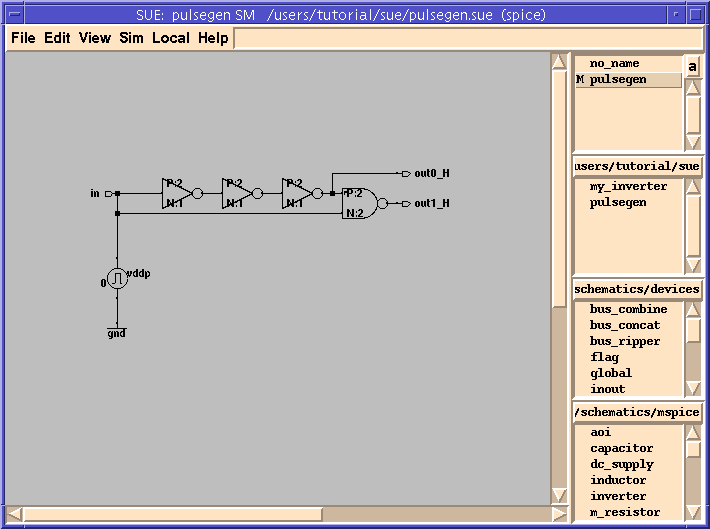
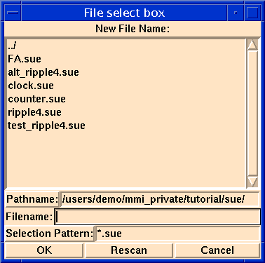
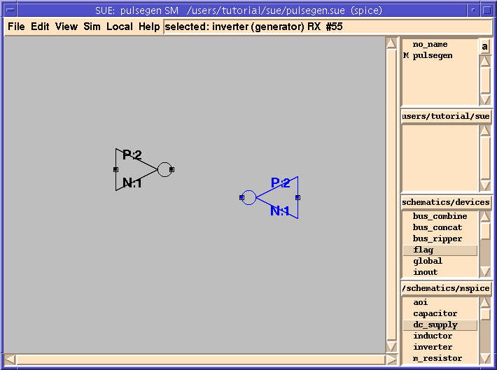
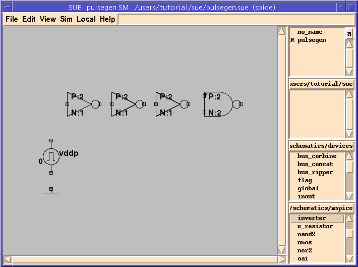
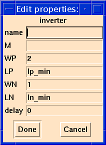
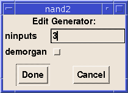
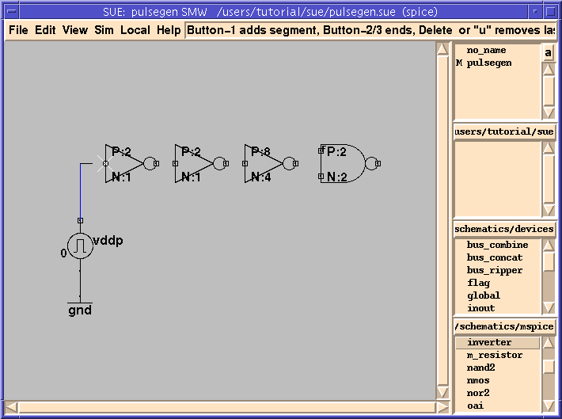
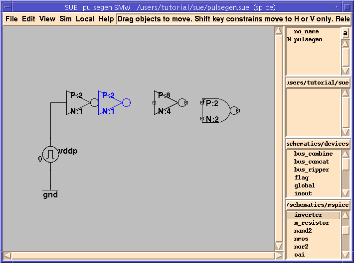
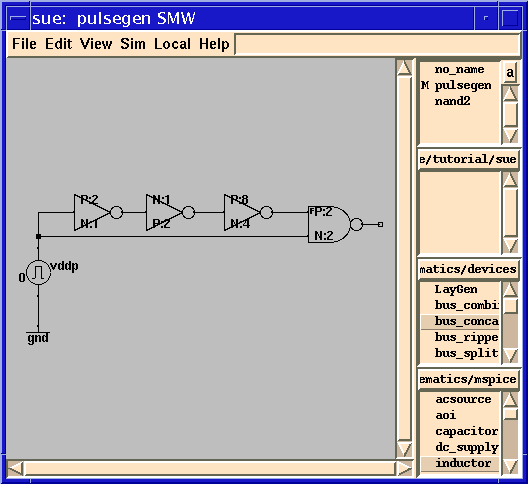

SUE Design Manager Tutorial |
Part 2
Schematics And Icons
Introduction
Drawing A Schematic
- OK, we are now ready to draw a schematic using SUE.
- We are going to draw a very simple (and not very useful) circuit that simply generates a pulse. The circuit we are going to draw is shown in Figure†3.
Figure 3: Simple SUE Schematic

Creating a New File
- First we will create a new schematic with a given name.
- Pull down the
Filemenu and selectNew Schematic. This will bring up theFile Selectbox, as shown in Figure†4. Note that you could have also used the hotkey Ctrl-n to bring up this menu as well. That is, while holding down the Control key, type "n".
Figure 4: The File Select Box

- The
File Selectbox lets you select a directory along with the schematic name. This is the directory where the schematic will be saved.
- You should now see "
pulsegen" in theSchematic Listbox and also in the title bar at the top of the window. The title bar tells you that you are now editingpulsegen.
- Now to draw our schematic.
Beginning the Schematic
- Find the "
inverter" icon in themspice Library Icon Listbox. You might have to scroll to find it. Next, click Button-1 over "inverter" and then move the cursor over to the schematic window where you should see the inverter icon appear. Drop the inverter where you want it by clicking Button-1 again.
- Notice that an "
M" has appeared to the left of the "pulsegen" name in theSchematic Listbox, at the top right of the SUE window, and also in the title bar of the window. The "M" tells you that the cell is modified.
- SUE doesn't let you exit if you have any modified schematics or icons without verification. Let's try it to see what happens.
- Let's add another icon, but this time we'll try something fancier.
- Click on Button-1 to drop the inverter. Your schematic should now look something like Figure†5.
Figure 5: Two Inverters

Selecting Icons
- In SUE, most editing operations apply to the selected object.
Objects, either icons, wires, text, arcs, or lines, change color to blue if they are selected (the colors referred to here are the default colors). You probably noticed that if you put the cursor over an icon, its color changes to white. This is known as the active object.
- Move your cursor away from the inverter. It should change to blue which means it is selected but not active.
- SUE lets you do lots of interesting things to the selected object. For example, let's take the inverter you just dropped and rotate it
- Selected objects are also described in the
SUE Message Area.
- This is telling you that you have selected an inverter which is a generator (more about that later) and which is flipped in the Y direction and has the unique identifier of "
23" in this schematic. The first inverter should have an orientation ofR0(no flipping or rotating).
- To recap, objects can be in one of 4 states:
- The two main ways to select objects with the cursor are by clicking Button-1 on an active object as described above, or by dragging a select box around a region. By default, the previous selection will be cleared when making a new selection. To prevent this, simply hold down the Shift key when selecting, and the new selection will add to the old selection. Also, clicking Button-1 over a blank part of the schematic (that is, with nothing active), clears the selection.
- Now you try.
- Now let's do something to the selected object.
- You can also
Move,Flip,Duplicate,Delete, andModifythe inverter. All of these features and more are found in theEditmenu.Editmenu features work on the selected object or objects. Once again, you can either use the menu or the hotkeys.
- Let's try duplicating an icon:
- It's time to get back to making our pulse generator.
- We now need two more icons, the "
pulse" from themspiceLibrary, and the "global" from thedevices Library. Place them to the left of everything else as in Figure†6.Figure 6: Icons Placed in Window

Editing Icons
- Every icon has
properties(also known asparameters). At the very least, an icon usually has anamepropertyso you can specify its name for netlisting. The icons that come from themspice Libraryare for transistor-level design and have parameters for transistor widths and lengths, also.
- Let's edit the transistor sizes of the third inverter to make them larger.
- Double-click with the left mouse button (Button-1) on the active inverter. This brings up an
Edit Propertiesdialog box as shown in Figure†7 and selects the inverter.
Figure 7: Edit Properties Pop-up for Inverter

- Now let's assign the correct name to the
globalicon. Theglobalicon turns its attached wire into a global signal like a power supply. For ourpulsegencircuit we want theglobalto be `ground' to provide a reference for our pulse generator.
- The
pulseicon will generate a string of pulses for SPICE simulation. You can change the duration, amplitude, delay, period, etc. of the pulses by editing thepulseicon properties.
- Since you have done some work you should now save your circuit.
- Notice that the
Mdisappeared from next topulsegenin the schematic list box. The title bar of the window now hasSWnext topulsegen. This means that this is aSchematic, and it has beenWritten.
Generators in SUE
- Many of the sample gates provided with SUE are generators. A SUE generator takes arguments that can structurally change its icon and/or schematic (unlike parameterized icons) and creates a new icon/schematic. Hence, for every generator, a multitude of cells can be generated, depending on the combination of its arguments.
- For example, the "
nand2”icon is actually a generator. You can edit the number of inputs and/or specify that you want to use a demorgan equivalent icon. The schematics under the icon will also change based on the number of inputs.
- Notice the Verilog property line which should say:
"-type fixed -name verilog -text {assign \#$delay out=!($In0&&$In1)\;}"
- This is the Verilog model for a 2 input nand gate.
- To change the generator properties, hold down the Shift key and double-click on the
nand2gate with the left mouse button. The pop-up for thenand2in will appear, as shown in Figure†8.Figure 8: Edit Generator Form for nand2

Wiring and Connectivity
- We are now ready to wire up the circuit. First, look closely at the ports of each of the icons. Do you see a hollow square surrounding each port? If not, zoom in until you do. The hollow square, called an `open', signifies that the port is unconnected.
- Ports and wire ends show connectivity with one of three symbols:
- Remember to pay attention to this when you wire up the circuit. If you think that you have connected a wire to a port but you missed, the `open' won't go away.
- Now let's add some wires.
- Move the cursor up (vertically) away from the port on top of the
pulseicon. A wire should follow your cursor. When you get up to about the level of the inverter input port click the left mouse button (Button-1) again and move the cursor to the right. The mouse click should have created an anchor point which allows you to put a bend into the wire. See Figure†9.Figure 9: Drawing A Wire

SUE tries to help you wire by placing a white `X' at the nearest open port to the cursor, as shown in Figure†9. If you like that location then simply double-click with the left mouse button (Button-1) and SUE will wire it up for you.
- When you move icons that are connected to wires, the wires stay connected. You can use this feature to add wires by abutting ports from two different icons you want to connect.
- Move the middle inverter left so that its input port overlaps with the output port of the inverter to its left as shown in Figure†10. To move the inverter, move the cursor until the inverter is active (white) and then press and hold Button-2. You are now in
move modeand the inverter will follow the cursor until you release the button. Once you release the button, the opens between the two inverters should go away. If not, repeat until they do.Figure 10: Wiring By Abutment

- If you draw a wire that crosses another wire, the two won't connect. In order for them to connect they have to overlap at least one of the endpoints of the wire or at a port. To get two wires to connect, just start or stop the new wire over the old wire.
- Now wire up the other pieces so that your schematic looks like Figure†11. Don't worry about the ports yet; we will add them later in the tutorial.
Figure 11: Sample SPICE Schematic

| ----- Micro Magic ----- |